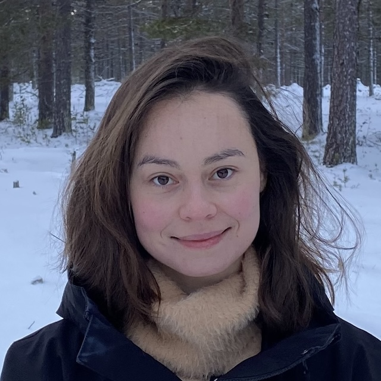
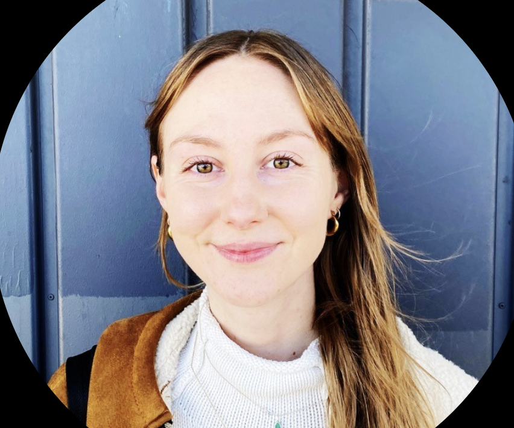

We are pleased to announce this second edition of GRaM, as an ICLR 2026 workshop. This year, we will have a focus on scale and simplicity. We open three tracks: paper tracks, blogposts track and a new competition track. You can find us on the official ICLR webpage.
Speakers
Panelists
Paper heatmap
GRaM accepted papers
Come see our posters at the workshop!
| % | Generative mod.10% | Repres. learning18% | Molecular / 3D11% | LLMs / Found. mod.10% | Optim. / Training16% | Theory / Express.7% | Scaling / Effic.13% | Induct. / Architec.13% | Other2% | |
|---|---|---|---|---|---|---|---|---|---|---|
| Graph theory | 15% | 3 | 3 | 6 | 1 | 6 | 3 | 7 | 5 | · |
| Group theory / Equivariance | 20% | 5 | 7 | 7 | 3 | 7 | 5 | 6 | 10 | · |
| Differential geometry | 17% | 9 | 6 | 2 | 4 | 8 | 2 | 1 | 3 | · |
| Topology / TDA | 8% | 1 | · | 2 | 1 | 3 | 1 | 1 | 1 | 1 |
| Hyperbolic / Non-Euclidean spaces | 6% | 1 | 4 | · | 2 | · | 1 | 2 | 4 | · |
| Optimal transport | 4% | · | 1 | 1 | 2 | 3 | · | 2 | · | · |
| Linear algebra / Spectral methods | 15% | 2 | 8 | · | 5 | 6 | 2 | 5 | 3 | 1 |
| Information theory / Dimensionality | 8% | 2 | 5 | 1 | 1 | 3 | 1 | 3 | 1 | · |
| Empirical / Struct. data | 8% | 1 | 3 | 2 | 3 | 4 | · | 1 | 2 | 1 |
Program
Sunday, April 26, 2026 · Room 101 A.
-
The Affine Divergence: Aligning Activation Updates Beyond Normalisation
George Bird 10 min online -
Algebraic priors for approximately equivariant networks
Riccardo Ali, Pietro Liò, Jamie Vicary 10 min -
The Geometry of Spectral Gradient Descent: Layerwise Criteria for SignSGD vs SpecSGD
Laura Gomezjurado Gonzalez, Mahdi Ghaznavi, Hiroki Naganuma, Ioannis Mitliagkas 5 min -
mHC-lite: You Don't Need 20 Sinkhorn–Knopp Iterations
Yongyi Yang, Jianyang Gao 5 min recorded -
Riemannian Metric Matching for Scalable Geometric Modelling of Distributions
Jacob Bamberger, Adam Gosztolai, Pierre Vandergheynst, Michael M. Bronstein, Iolo Jones 5 min
Deadlines
- Paper submission:
February 5, 2026 (AoE) - Paper notification:
March 1st, 2026 (AoE) - Paper camera-ready:
March 11th, 2026 (AoE) - Blogpost submission:
April 15, 2026 (AoE) - Competition submission: April 22, 2026 (AoE)
- Workshop dates: April 26, 2026
Call for Blogposts (Submit)
We invite submissions to our blogpost track. We welcome blog posts in the ICLR Distill format that communicate ideas clearly and accessibly. See the full guidelines and submit on the blogpost website, and explore blog posts from GRaM 2024 for examples. Deadline: April 15, 2026 (AoE).
Call for Competition (Submit)
We are hosting a benchmark challenge on transient airflow prediction over 3D geometries inspired by Formula 1 front wings, with simulation data provided by BeyondMath. Given a geometry and airflow at previous time points, predict the airflow at future time points. The winner receives the MCML Award (500 € prize). All valid submissions will be published in the workshop proceedings with co-authorship. Submissions are made via pull requests — see the competition website for details. Deadline: April 22, 2026 (AoE).
Accepted Papers (OpenReview)
The call for papers is closed. You can see all the accepted papers on the openreview page ICLR 2026 Workshop GRaM. Congratulations to all the authors!
Motivation
Many real-world datasets have geometric structure, but most ML methods ignore such structure, and treat all inputs as plain vectors. GRaM is a workshop about grounding models in geometry, using ideas from group equivariance to non-Euclidean metrics, to build better, more interpretable representations and generative models.
An approach is geometrically grounded if it respects the geometric structure of the problem domain and supports geometric reasoning.
For this second edition, we aim to explore the relevance of geometric methods, particularly in the context of large models, focusing on the theme of scale and simplicity.
Topics
We solicit submissions that present theoretical research, methodologies, applications, insightful analysis, and even open problems, within the following topics (list not exhaustive):
- Preserving data geometry
- Preservation of symmetries; e.g., through equivariant operators.
- Geometric representation systems; e.g., encoding data in intrinsically structured forms via Clifford algebras or steerable vectors with Clebsch-Gordan products.
- Isometric latent mappings; e.g., learning latent representations of the data via pullback metrics.
- Inducing geometric structure
- Geometric priors; e.g., introducing curvature, symmetry, or topological constraints through explicit regularization.
- non-Euclidean generative models; e.g., extending diffusion models or flow matching models to non-Euclidean domains with a predefined metric.
- Metric-preserving embeddings; e.g., learning latent spaces where intrinsic geodesic distances are mapped to Euclidean ones.
- Geometry in theoretical analysis
- Data and latent geometry · Gaining insights on the data manifold, statistical manifold or the latent variables using geometric tools.
- Loss landscape geometry · Viewing parameters and their optimization trajectory as lying on a manifold, enabling analysis of curvature, critical points, and generalization.
- Theoretical frameworks · Using differential geometry, algebraic geometry, or group theory to provide a generalizing perspective on generation or representation learning.
- Open problems · Identifying and addressing unresolved questions and challenges that lie at the intersection of geometry and learning.
- Scale and Simplicity
- Geometry at scale · Does equivariance retain value in large-scale models?
- Redundancy and minimality · Evaluating when geometric structure is essential versus when simpler architectures suffice.
- Challenging assumptions · Reporting negative results or limitations of geometric methods to guide future development.
Organizers

Alison Pouplin Erik Bekkers
Erik Bekkers

Elizabeth (Libby) BakerWorkshop Sponsor
Competition Sponsors

Acknowledgements to our co-organzing sponsors
We are grateful to New Theory for their generous financial support of the workshop. We also thank BeyondMath for creating and curating the incredible dataset powering our competition, with a special thanks to Gavin Seegoolam (BeyondMath) and Julian Suk (Competition Area Chair) for making it happen. Finally, we thank MCML for providing the competition winners with an award prize.
Area Chairs
We would like to thank our Area Chairs for their invaluable help with the review process:
- Elizabeth Baker, DTU Denmark
- Erik Bekkers, Universiteit van Amsterdam
- Samuel Fadel, DTU Denmark
- Sékou-Oumar Kaba, McGill University and Mila
- Hannah Lawrence, MIT
- Alison Pouplin, Bayer
- Behrooz Tahmasebi, Harvard University
- Shubhendu Trivedi, DeepMind
- Sharvaree Vadgama, UC San Diego
- Robin Walters, Northeastern University
- Bo Zhao, UC San Diego